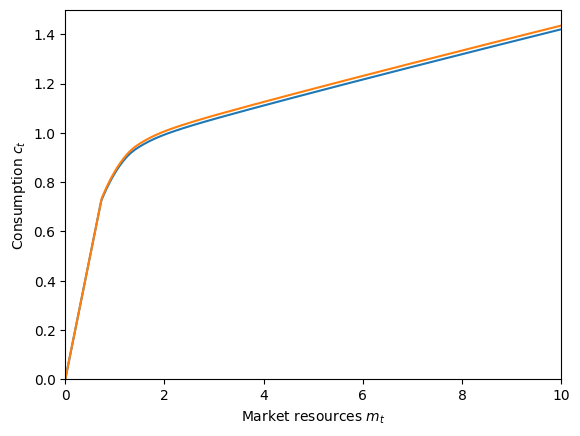
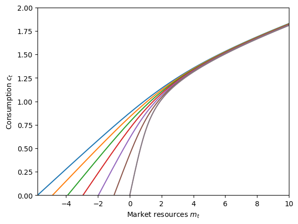
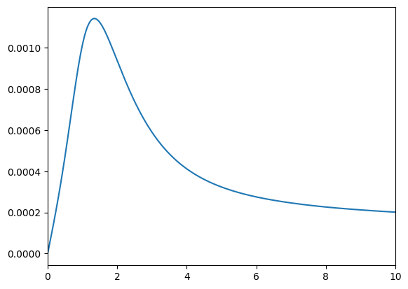
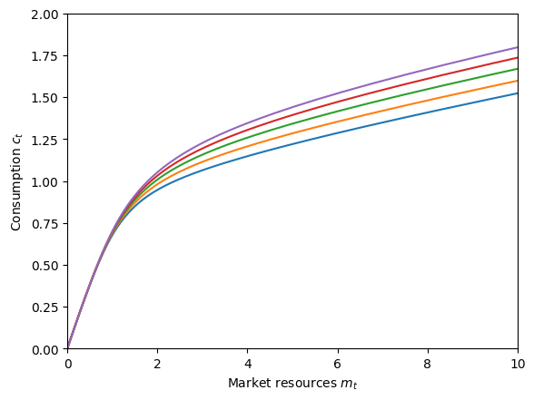

Interactive online version:
Discrete State with Markov Transitions#
This module defines consumption-saving models in which an agent has CRRA utility over consumption, geometrically discounts future utility flows and expects to experience transitory and permanent shocks to his/her income. Moreover, in any given period s/he is in exactly one of several discrete states. This state evolves from period to period according to a Markov process.
[1]:
from time import time
import numpy as np
import matplotlib.pyplot as plt
from HARK.ConsumptionSaving.ConsMarkovModel import (
MarkovConsumerType,
make_ratchet_markov,
)
from HARK.distributions import DiscreteDistributionLabeled
from HARK.utilities import plot_funcs
mystr = lambda number: f"{number:.4f}"
Model Statement#
In this model, an agent is very similar to the one in the “idiosyncratic shocks” model of ConsIndShockModel , except that here, an agent’s income distribution (\(F_{t+1}\)), permanent income growth rate \(\Gamma_{t+1}\), survival probability \(\mathsf{S}_t\), and interest factor \(R\) are all functions of the Markov state and might vary across states.
\(\newcommand{\CRRA}{\rho}\) \(\newcommand{\LivPrb}{\mathsf{S}}\) \(\newcommand{\PermGroFac}{\Gamma}\) \(\newcommand{\Rfree}{\mathsf{R}}\) \(\newcommand{\DiscFac}{\beta}\)
The agent’s problem can be written in Bellman form as:
\begin{eqnarray*} \text{v}_t(m_t,s_t) &=& \max_{c_t} u(c_t) + \beta \mathsf{S}_{t}(s_t) \mathbb{E} [\text{v}_{t+1}(m_{t+1}, s_{t+1}) ], \\ a_t &=& m_t - c_t, \\ a_t &\geq& \underline{a}, \\ m_{t+1} &=& \frac{R(s_{t+1})}{\Gamma(s_{t+1})\psi_{t+1}} a_t + \theta_{t+1}, \\ (\psi_{t+1},\theta_{t+1}) &\sim& F_{t+1}(s_{t+1}), ~~~ \mathbb{E} [\psi_t ~|~ s_t] = 1, \\ Prob[s_{t+1}=j| s_t=i] &=& \triangle_{t,ij}, \\ u(c) &=& \frac{c^{1-\rho}}{1-\rho}. \end{eqnarray*}
The Markov matrix \(\triangle_t\) specifies transition probabilities from current state \(i\) to future state \(j\).
The class MarkovConsumerType extends IndShockConsumerType to represents agents in this model.
Example Parameters for a MarkovConsumerType#
The parameters to specify a MarkovConsumerType are mostly the same as for the familiar IndShockConsumerType , but with some key differences and additions. Most notably, model parameters that are discrete-state-varying must be specified as a list of values, or a nested list if the parameter is both time-varying and discrete-state-varying. Because the income distribution \(F_t\) depends on both age and the discrete state, parameters that describe the income process are nested lists
(when using the default constructor).
Second, the Markov transition matrix \(\Delta_t\) must be specified in some way. In the default dictionary, the Markov process is binary, and specified with (age-dependent) probabilities of remaining in each state, Mrkv_p11 and Mrkv_p22. This behavior can be changed by setting the MrkvArray entry in the constructors dictionary; HARK provides a couple other example constructors. If your MrkvArray will not be produced by a parametric constructor function (e.g., maybe it’s
result of some other model output), just set constructors["MrkvArray"] = None in your parameter dictionary to turn off the constructor apparatus.
Param |
Description |
Code |
Value |
Constructed |
|---|---|---|---|---|
\(\DiscFac\) |
Intertemporal discount factor |
|
\(0.96\) |
|
\(\CRRA\) |
Coefficient of relative risk aversion |
|
\(2.0\) |
|
\(\Rfree_t\) |
Risk free interest factor |
|
\([[1.03, 1.03]]\) |
\(\surd\) |
\(\LivPrb_t\) |
Survival probability |
|
\([[0.98,0.98]]\) |
\(\surd\) |
\(\PermGroFac_{t}\) |
Permanent income growth factor |
|
\([[0.99, 1.03]]\) |
\(\surd\) |
\(\sigma_\psi\) |
Standard deviation of log permanent income shocks |
|
\([[0.1,0.1]]\) |
\(\surd\) |
\(N_\psi\) |
Number of discrete permanent income shocks |
|
\(7\) |
|
\(\sigma_\theta\) |
Standard deviation of log transitory income shocks |
|
\([[0.1,0.1]]\) |
\(\surd\) |
\(N_\theta\) |
Number of discrete transitory income shocks |
|
\(7\) |
|
\(\mho\) |
Probability of being unemployed and getting \(\theta=\underline{\theta}\) |
|
\([0.05,0.05]\) |
|
\(\underline{\theta}\) |
Transitory shock when unemployed |
|
\([0.3,0.3]\) |
|
\(\mho^{Ret}\) |
Probability of being “unemployed” when retired |
|
\(0\) |
|
\(\underline{\theta}^{Ret}\) |
Transitory shock when “unemployed” and retired |
|
\(0.0\) |
|
\((none)\) |
Period of the lifecycle model when retirement begins |
|
\(0\) |
|
\((none)\) |
Minimum value in assets-above-minimum grid |
|
\(0.001\) |
|
\((none)\) |
Maximum value in assets-above-minimum grid |
|
\(20.0\) |
|
\((none)\) |
Number of points in base assets-above-minimum grid |
|
\(48\) |
|
\((none)\) |
Exponential nesting factor for base assets-above-minimum grid |
|
\(3\) |
|
\((none)\) |
Additional values to add to assets-above-minimum grid |
|
\(None\) |
|
\(\underline{a}\) |
Artificial borrowing constraint (normalized) |
|
\(0.0\) |
|
\((none)\) |
Indicator for whether |
|
\(True\) |
|
\((none)\) |
Indicator for whether |
|
\(False\) |
|
\(s_0\) |
Distribution of discrete state at model entry |
|
\([1.0, 0.0]\) |
|
\(\Delta_{t,00}\) |
Probability of remaining in the first discrete state |
|
\([0.9]\) |
\(\surd\) |
\(\Delta_{t,11}\) |
Probability of remaining in the second discrete state |
|
\([0.4]\) |
\(\surd\) |
The constructor function make_simple_binary_markov uses the parameters Mrkv_p11 and Mrkv_p22 (as well as T_cycle ) to build MrkvArray , a list with a single \(2 \times 2\) array in it.
Example Implementations of MarkovConsumerType#
When the solve method of a MarkovConsumerType is invoked, the solution attribute is populated with a list of ConsumerSolution objects, which each have the same attributes as the “idiosyncratic shocks” model. However, each attribute is now a list (or array) whose elements are state-conditional values of that object.
For example, in a model with 4 discrete states, each the cFunc attribute of each element of solution is a length-4 list whose elements are state-conditional consumption functions. That is, cFunc[2] is the consumption function when \(s_t = 2\).
ConsMarkovModel is compatible with cubic spline interpolation for the consumption functions, soCubicBool = True will not generate an exception. The problem is solved using the method of endogenous gridpoints, which is moderately more complicated than in the basic ConsIndShockModel.
Several variant examples of the model will be illustrated below:
Default parameters with binary growth states
Model with serially correlated unemployment
Model with period of “unemployment immunity”
Model with serially correlated permanent income growth
Default parameters: binary growth states#
When MarkovConsumerType is used “off the shelf”, the default parameters generate a binary Markov process in which the two states differ only in the expected growth rate of permanent income \(\PermGroFac_t\); the first (index 0 ) state has lower expected growth and the second state (index 1 ) has higher expected growth.
Let’s make and solve an infinite horizon model with the default parameters, then plot the consumption function for each state.
[2]:
# Make and solve a default MarkovConsumerType
DefaultType = MarkovConsumerType(cycles=0)
t0 = time()
DefaultType.solve()
DefaultType.unpack("cFunc")
t1 = time()
print("Solving the model with default parameters took " + mystr(t1 - t0) + " seconds.")
Solving the model with default parameters took 0.4751 seconds.
[3]:
# Plot the consumption functions
plt.ylim(0.0, 1.5)
plot_funcs(
DefaultType.cFunc[0],
0.0,
10.0,
xlabel=r"Market resources $m_t$",
ylabel=r"Consumption $c_t$",
)

Well that’s not very interesting. Let’s try something else.
Unemployment immunity for a fixed period#
Now let’s create the model for a consumer who occasionally gets “unemployment immunity” for a fixed period. That is, every so often the consumer learns that they have been blessed and cannot become unemployed for the next \(N\) periods. When employed, the agent receives constant income; when unemployed, they get no income. We will also remove the artificial borrowing constraint to make the effects of the good news more apparent.
Somewhat unintuitively, this model has \(N+2\) discrete states. The last state index N+1 represents “ordinary times” with binary income and no “unemployment immunity”. State index 0 is someone who has just learned that they have been granted unemployment immunity for \(N\) periods; they were subject to a binary income realization at the start of this period. The intermediate \(N\) periods are when the agent has \(N-1, N-2, \cdots, 0\) periods of unemployment immunity
remaining. The \(0\) periods remaining has its own state because the income distribution in that state is different from ordinary times, and we don’t allow the agent to immediately regain immunity; they must be in normal times for at least one period.
With this setup, we can use another of HARK’s constructors for MrkvArray , called make_ratchet_markov . In a “ratchet Markov” array, transitions only go in one direction, and only one step at a time. The transition from the last state goes back to the first state, or can be set as an absorbing state by specifying its “ratchet probability” as \(0\). This constructor function will be called from within our own custom constructor, defined below.
[9]:
# Define a custom constructor for MrkvArray that uses make_ratchet_markov
def make_unemp_immunity_mrkv(ImmunityPrb, ImmunityT, T_cycle):
"""
Make a list of repeated Markov transition arrays for the "unemployment immunity" model.
Parameters
----------
ImmunityPrb : float
Probability of gaining "unemployment immunity" when in normal times.
ImmunityT : int
Number of periods that unemployment immunity is gained for.
T_cycle : int
Number of periods in this agent's sequence; only used to determine list length.
Returns
-------
MrkvArray : [np.array]
Length T_cycle list of repeated "unemployment immunity" Markov arrays.
"""
ratchet_probs = T_cycle * [
np.concatenate((np.ones(1 + ImmunityT), np.array([ImmunityPrb])))
]
MrkvArray = make_ratchet_markov(T_cycle, ratchet_probs)
return MrkvArray
The income distribution depends on the length of unemployment immunity, so let’s make a constructor for it as well.
[10]:
# Make a custom constructor for IncShkDstn for the unemployment immunity model
def make_unemp_immunity_incshkdstn(UnempPrb, ImmunityT, T_cycle):
"""
Make a list of repeated state-dependent income shock distributions for the "unemployment immunity" model.
Parameters
----------
UnempPrb : float
Probability of getting zero income during normal times.
ImmunityT : int
Number of periods that unemployment immunity is gained for.
T_cycle : int
Number of periods in this agent's sequence; only used to determine list length.
Returns
-------
IncShkDstn : [[DiscreteDistribution]]
Length T_cycle nested list, repeating the same state-dependent income shock distribution.
"""
IncShkDstnReg = DiscreteDistributionLabeled(
pmv=np.array([1 - UnempPrb, UnempPrb]),
atoms=np.array([[1.0, 1.0], [1.0, 0.0]]),
var_names=["PermShk", "TranShk"],
) # Ordinary income distribution
IncShkDstnImm = DiscreteDistributionLabeled(
pmv=np.array([1.0]),
atoms=np.array([[1.0], [1.0]]),
var_names=["PermShk", "TranShk"],
) # Immune income distribution
IncShkDstn_t = [IncShkDstnReg] + ImmunityT * [IncShkDstnImm] + [IncShkDstnReg]
IncShkDstn = T_cycle * [IncShkDstn_t]
return IncShkDstn
Now we can make and solve an instance of MrkvConsumerType to represent this model.
[11]:
# Make a consumer who occasionally gets "unemployment immunity" for a fixed period
ImmunityT = 6 # Number of periods of immunity
N = ImmunityT + 2
init_unemployment_immunity = {
"UnempPrb": 0.05, # Probability of becoming unemployed each period
"ImmunityPrb": 0.01, # Probability of becoming "immune" to unemployment
"ImmunityT": 6, # Number of periods of immunity
"Rfree": [1.02 * np.ones(N)],
"LivPrb": [0.98 * np.ones(N)],
"PermGroFac": [1.01 * np.ones(N)],
"BoroCnstArt": None,
"CubicBool": True,
"cycles": 0,
"constructors": {
"MrkvArray": make_unemp_immunity_mrkv,
"IncShkDstn": make_unemp_immunity_incshkdstn,
},
}
ImmunityExample = MarkovConsumerType(**init_unemployment_immunity)
[12]:
# Solve the unemployment immunity problem and display the consumption functions
t0 = time()
ImmunityExample.solve()
t1 = time()
print(
'Solving an "unemployment immunity" consumer took ' + mystr(t1 - t0) + " seconds.",
)
Solving an "unemployment immunity" consumer took 0.6922 seconds.
[13]:
mNrmMin = np.min([ImmunityExample.solution[0].mNrmMin[j] for j in range(N)])
plt.ylim(0.0, 2.0)
plot_funcs(
ImmunityExample.solution[0].cFunc,
mNrmMin,
10.0,
xlabel=r"Market resources $m_t$",
ylabel=r"Consumption $c_t$",
)
C:\Users\Matthew\Documents\GitHub\HARK\HARK\interpolation.py:2248: RuntimeWarning: All-NaN slice encountered
y = self.compare(fx, axis=1)

The blue consumption function represents when the consumer has just learned that they are guaranteed to receive income for the next \(N\) periods. Because there is no artificial borrowing constraint, they can borrow against future earnings. Thus the consumption functions for agents with temporary unemployment immunity are defined below zero. Agents in normal times and those who are in their final immunity period have almost identical consumption functions, but “normal times” are slightly better: the agent has some hope that they will be granted immunity next period, but the agent in their last period must go to normal times for at least one period. We can plot the difference between these consumption functions to verify.
[14]:
# Plot the difference between consumption functions in normal times and when immunity has just expired
f = lambda m: ImmunityExample.solution[0].cFunc[-1](m) - ImmunityExample.solution[
0
].cFunc[-2](m)
plot_funcs(f, 0.0, 10.0)

Yep: the agent consumes just barely more in normal times!
Serial permanent income growth#
Finally, we’ll make a MarkovConsumerType with serially correlated income growth. We’ll use the standard income shock process within each state, but have different average permanent income growth within each state, through PermGroFac . The Markov transition process will specify the persistence of all state, with a random state selected with complementary probability (including remaining in the same state).
First, let’s define our custom “persistence Markov” process.
[15]:
# Define a constructor for the "random persistence" process
def make_random_persistence_mrkv(StateCount, Persistence, T_cycle):
"""
Make a repeated list of Markov transition arrays with specified state persistence on the diagonal and uniform transitions off it.
Parameters
----------
StateCount : int
The number of discrete states.
Persistence : float
The probability of (being guaranteed to) remain in the current state.
T_cycle : int
The number of periods in this agent's sequence, used only for the length of the list.
Returns
-------
MrkvArray : [np.array]
Length T_cycle repeated list of persistence Markov transition arrays.
"""
on_diag = Persistence * np.eye(StateCount)
off_diag = (1.0 - Persistence) / StateCount * np.ones((StateCount, StateCount))
MrkvArray_t = on_diag + off_diag
MrkvArray = T_cycle * [MrkvArray_t]
return MrkvArray
Now we can make a parameter dictionary. When using the default income shock process constructors, we specify PermShkStd and TranShkStd (etc) as arrays of shape (T_cycle, StateCount) with the same value in all entries. We’ll set the persistence factor fairly high (80%) and have a wide spread of permanent income growth rates.
[16]:
# Make a consumer with serially correlated permanent income growth
N = 5 # Number of permanent income growth rates
PermGroFacMin = 0.97
PermGroFacMax = 1.05
init_serial_growth = {
"LivPrb": [0.98 * np.ones(N)],
"PermGroFac": [np.linspace(PermGroFacMin, PermGroFacMax, N)],
"Rfree": [1.02 * np.ones(N)],
"PermShkStd": 0.1 * np.ones((1, N)),
"TranShkStd": 0.1 * np.ones((1, N)),
"IncUnemp": np.zeros((1, N)),
"UnempPrb": 0.05 * np.ones((1, N)),
"Persistence": 0.8,
"StateCount": N,
"cycles": 0,
"constructors": {"MrkvArray": make_random_persistence_mrkv},
}
SerialGroExample = MarkovConsumerType(**init_serial_growth)
[17]:
# Solve the serially correlated permanent growth shock problem and display the consumption functions
t0 = time()
SerialGroExample.solve()
t1 = time()
print(
"Solving a serially correlated growth consumer took "
+ mystr(t1 - t0)
+ " seconds.",
)
plt.xlabel(r"Market resources $m_t$")
plt.ylabel(r"Consumption $c_t$")
plt.ylim(0.0, 2.0)
plot_funcs(SerialGroExample.solution[0].cFunc, 0, 10)
Solving a serially correlated growth consumer took 1.3412 seconds.

The consumption functions are ordered from lowest permanent income growth (blue) to highest (purple). As we would expect, the agent wants to consume more now when they expect their income to rise rapidly in the future, and to consume less when they expect their income to fall for a while.
You can use these examples to try constructing your own unusual models; MarkovConsumerType is pretty flexible!